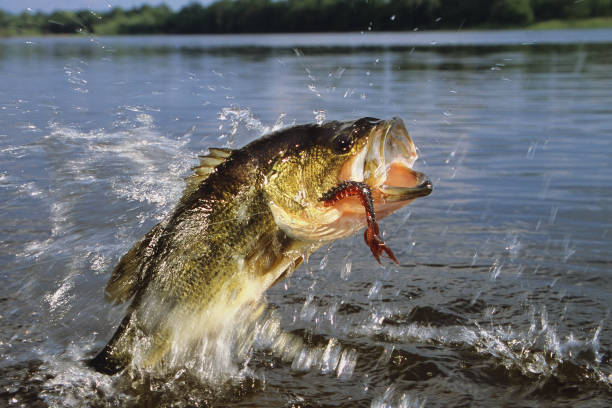

Fishing has been around since the dawn of time. Although the methods may have changed for catching fish, the endgame is still the same. Today, there are multiple methods of fishing along with thousands of different types of fish to try to catch. The most common ways of fishing are by using a type of reel and rod, such as hardbait casting and flyfishing. Flyfishing has arguabbly become the most famous method of fishing in recent years due to the finesse it takes to be successful at it. If you are a begining fishermen, it is recommended that you should try and start with open and/or closed face reels to start. They are much eaiser to handle and are a great way to start learing and enjoying fishing. Fishing is also a fantastic outdoor activity. Wether you are on a boat trying to jig for bottom feeding fish, or if you are walking up a stream in a mountain, fishing is a great activity thatll get you outdoors and enjoy nature. Also, some fish make a delicious meal, and are a very nutritious part of a healthy and balanced diet. If that isn't enough to make you want to throw out a line, I will share a quote that a wiseman once shared with me, "Your worst day of fishing is better than your best day at work."